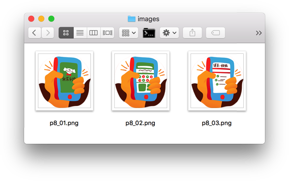
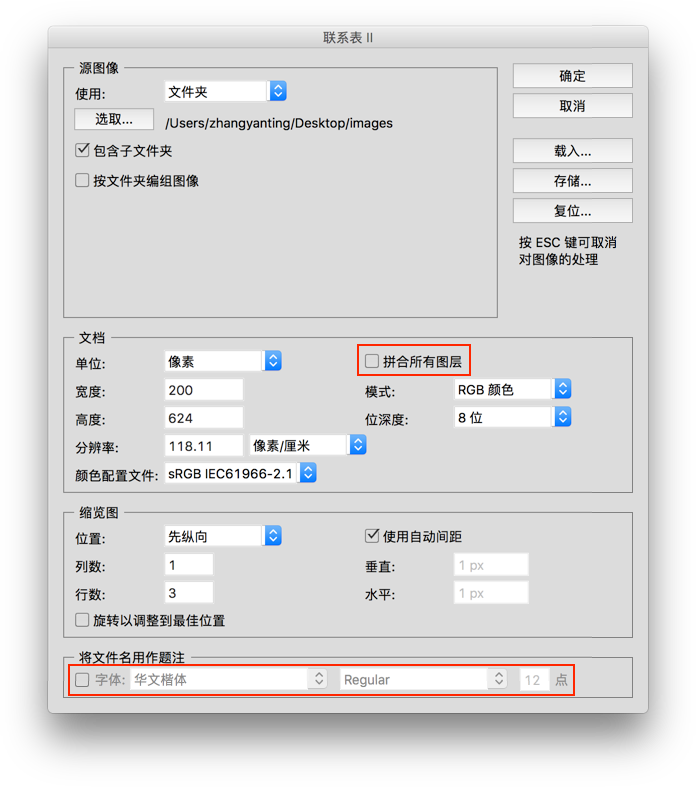
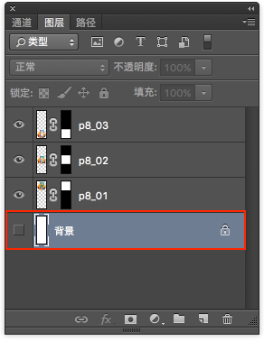
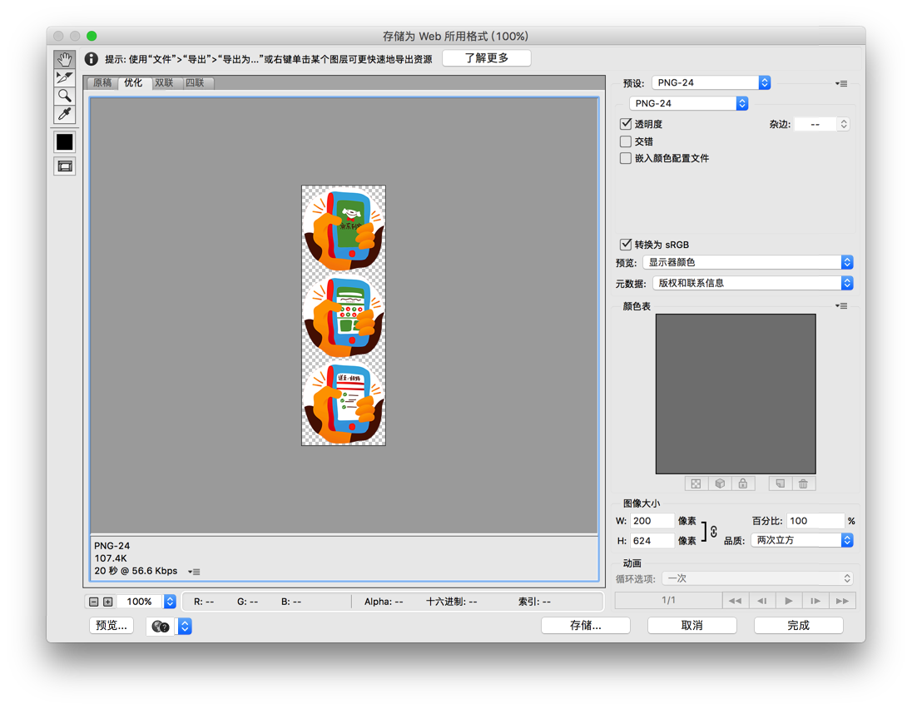
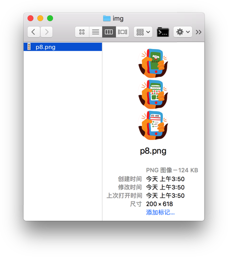
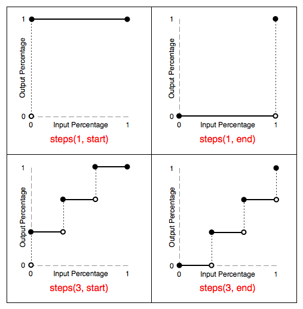
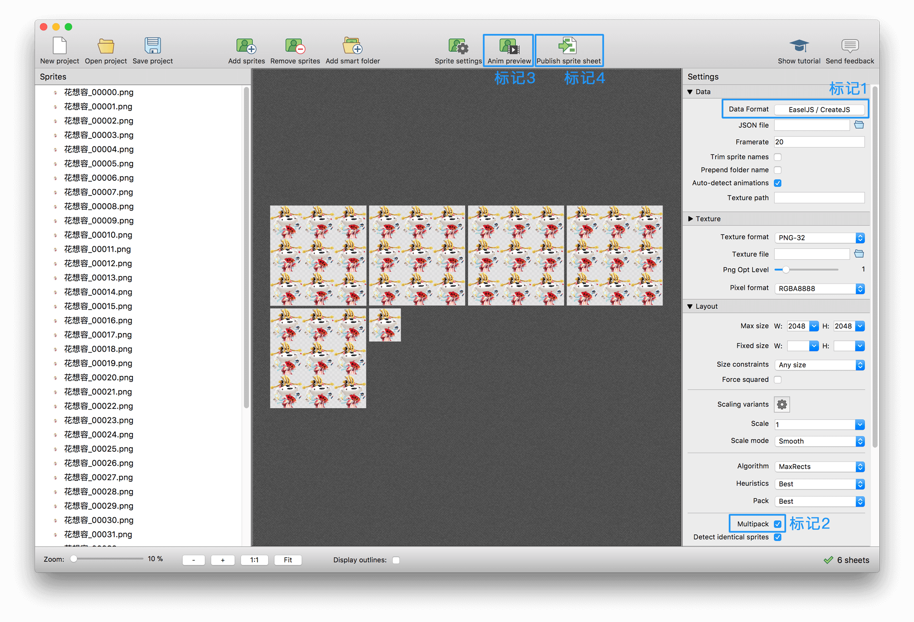

动效开发 4：逐帧动画
前一小节我们花了很大的篇幅去讲解「补间动画」的开发，除了因为它最常见，还因为其中间的许多实现思路（如「动效的审查与分解」、「基于 AE 动效稿还原动画」）同样适用于本小节将要介绍的另一种常见的基础动画形式 —— 「逐帧动画」。
什么是逐帧动画
逐帧动画的英文名字是 Frame-By-Frame Animation，其在维基百科中有如下定义：
定格动画，又名逐帧动画，是一种动画技术，其原理即将每帧不同的图像连续播放，从而产生动画效果。
简而言之，逐帧动画有两个要素：
（1）相关联的不同图像，即动画帧
（2）连续播放
逐帧动画最经典的例子，莫过于手翻书了。动画帧绘制在书本的不同页上，通过手动翻页来实现连续播放：
（图片来源：《一起翻一翻，手翻书的前世今生》）
逐帧动画的前端实现方案
在细聊 CSS3 逐帧动画之前，我们先了解下前端实现逐帧动画的几种方案。
1. 直接使用 GIF
GIF 可以有多个动画帧，连续播放是其自身属性，是否循环也是由其本身决定的。
GIF 往往用来实现小细节动画，成本较低、使用方便、兼容性好，但同时也存在画质低、交互不灵活等问题。
2. 使用 JavaScript 控制动画播放
将动画帧合并成雪碧图，放到 background-image 中，通过 JavaScript 改变 background-position 的值来实现动画的播放。
使用 JavaScript 实现逐帧动画，兼容性佳，且交互灵活。
3. 使用 Canvas 及相关库
将动画帧绘制到 Canvas 上，通过不断地重绘即可实现逐帧动画。CreateJS、Pixi.js 等库都提供了成熟的方案。
使用 Canvas 可以利用硬件加速，功能强大，操作灵活，有丰富的类库，但学习成本较高，且老式浏览器不兼容 Canvas。
4. 使用 CSS3 阶梯函数 steps(number_of_steps, direction)
CSS3 使用 animation-timing-function 的阶梯函数 steps(number_of_steps, direction) 来实现逐帧动画。
在实际工作过程中，开发「逐帧动画」最为常见的两种方式是第 3 和 4 种，CSS3 Animation 兼容性良好，相对于 JavaScript，CSS3 逐帧动画使用简单，且开发效率更高；而 Canvas 因为其性能优势，帧与帧之间切换的衔接度更高，适合实现帧数或尺寸（宽高）较大的逐帧动画。
案例实战 1 - 利用 CSS3 实现逐帧动画
与使用 JavaScript 实现相同，通过 CSS3 实现逐帧动画时，也是将动画帧放到 background-image 中。
逐帧动画往往有多个不同的动画帧，可以直接通过更改 background-image 的值实现帧的切换，但多个图片文件会带来多个 HTTP 请求，且不利于文件的管理。
比较妥当的做法是，将所有的动画帧合并成一张雪碧图（sprite），通过改变 background-position 的值来实现动画帧切换。因此，逐帧动画也被称为“精灵动画（sprite animation）”。
下面以京东到家的触屏页面《年货送到家》中的一个场景为例，为大家讲解如何利用 CSS3 来实现逐帧动画。
步骤 1 - 将动画帧合并为雪碧图
动画帧的合并方法有很多，可以使用图片处理软件、在线雪碧图工具、自动化脚本等。这里将介绍 Photoshop 中的操作。
- 准备好需要合并的动画帧，这里使用的动画帧尺寸为 200 x 206

- 打开 Photoshop - 文件 - 自动 - 联系表 II，选取所有动画帧，设置文档尺寸，注意红框部分取消勾选

- 背景图层不可见，导出雪碧图并命名为 p8.png


此时，我们可以得到如下的雪碧图 p8.png：

步骤 2 - 元素定位并设置背景
元素的尺寸需与动画帧的尺寸相同/等比例，将雪碧图放到元素的 background-image 中：
.page_key {
position: absolute;
left: 20px;
top: 20px;
width: 200px;
height: 206px;
background-image: url("../img/p8.png");
}
步骤 3 - 使用 steps 实现动画播放
通过查看 W3C 文档，可知 steps(number_of_steps, direction) 指定了一个阶梯函数，包含两个参数：
- 第一个参数指定了函数中的间隔数量（必须是正整数）
- 第二个参数可选，指定在每个间隔的起点或是终点发生阶跃变化，接受
start和end两个值，默认为end
可以通过下图更深入地理解 steps 函数：

（图片来源：W3C）
我们可以通过两种写法来实现例子中的逐帧动画，下面是第一种写法。
/* 写法一 */
.page_key {
animation: p8 steps(1,end) 1.5s infinite;
}
@keyframes p8 {
0% {background-position: 0 0;}
33.33333% {background-position: 0 -206px;}
66.66667% {background-position: 0 -412px;}
100% {background-position: 0 -618px;}
}
这里可能有读者疑惑，steps 的第一个参数为什么是 1？
前文中提到，steps 是 animation-timing-function 的一个属性值，在 W3C 中有如下说明：
For a keyframed animation, the ‘animation-timing-function’ applies between keyframes, not over the entire animation.
也就是说，animation-timing-function 应用于两个关键帧（状态）之间，而非整个动画。在上面的 keyframes 中，我们已经把每个关键帧都写出来了，所以两个关键帧之间的间隔是 1。
既然 steps 第一个参数是指函数的间隔数量，那么我们就可以把 keyframes 的计算直接交给 steps 来完成。
/* 写法二 */
.page_key{
animation: p8 steps(3,end) 1.5s infinite;
}
@keyframes p8 {
100% {background-position: 0 -618px;}
}
上述两种写法最终的动画效果是相同的：
至此，我们便实现了一个简单的 CSS3 逐帧动画，点击查看 DEMO 或扫描二维码：
CSS3 逐帧动画的一些技巧
CSS3 实现逐帧动画虽然简单，但也不乏技巧。
1. step-start 与 step-end
除了 steps 函数，animation-timing-function 还有两个与逐帧动画相关的属性值 step-start 与 step-end。
step-start等同于steps(1, start)：动画执行时以开始端点为开始。step-end等同于steps(1, end)：动画执行时以结尾端点为开始。
2. 使用 Sass 完成动画帧的计算
/* 写法一 */
@mixin frame($frameNum, $frameHeight) {
@for $i from 0 through $frameNum {
#{100/$frameNum*$i}% {background-position: 0 #{-$i*$frameHeight}px;}
}
}
/* 写法二 */
@mixin frame($frameNum, $frameHeight) {
100% {background-position: 0 #{-$frameNum*$frameHeight}px;}
}
@keyframes p8 {
@include frame($frameNum: 3, $frameHeight: 206)
}
3. 移动端使用 rem 配合 scale 适配，防止动画抖动
我们知道，rem 的计算会存在误差，因此使用雪碧图时我们并不推荐用 rem。
如果是逐帧动画的话，由于计算的误差，可能会出现动画抖动的情况。
为了解决这个问题，可以参考以下的适配思路：
- 非逐帧动画部分，使用
rem做单位 - 逐帧动画部分，使用
px做单位，再结合 JavaScript 对动画部分使用scale进行缩放
另外也可以通过 SVG 来解决抖动的问题，有兴趣可移步《CSS 技巧：逐帧动画抖动解决方案》 做进一步的了解。
案例实战 2 - 利用 Canvas 做一个会动的京东 JOY
CSS3 实现的逐帧动画，如果它的帧数较多或尺寸较大时，移动端可能会存在渲染性能问题，此时建议改用 Canvas 实现。 相对于 CSS3 来说，Canvas 具有更高的学习成本，所以实际项目中推荐使用业务成熟的 Canvas 动画库，如 CreateJS、Pixi.js 等。
下面我们以 「京东 JOY 福星会场 一一 八仙乐游记」 中的其中一个动画为例，为大家讲解如何利用 Canvas 实现逐帧动画。
步骤 1 - 准备动画帧所需的雪碧图
在前面的案例中我们介绍了通过 Photoshop 手动合成雪碧图的方式，这里我们使用 TexturePacker 工具（付费软件，帧动画开发利器，值得购买）来更快地完成同样的事情。

（TexturePacker 用户界面）
TexturePacker 导出雪碧图的步骤如下：
- 将逐帧动画所有帧拖到 TexturePacker
- 选择逐帧动画的渲染载体（标记1）
- 根据需要设置其余配置，如：当雪碧图超过 1 张时，请选择
Multipack选项（标记2） - 点击 Publish sprite sheet（标记4）即可导出雪碧图和相应渲染载体的数据（若有）
预览逐帧动画的步骤：
选择所有帧
选择左侧 Sprites 面板其中一帧，然后按 Cmd/Ctrl + A 全选所有帧；或者拖拽选择所有帧。
点击 Anim preview（标记3）
如果我们选了渲染载体为 EaselJS / CreateJS， 其导出的 JSON 文件如下：
{
"images": [
"hxr-0.png",
"hxr-1.png",
"hxr-2.png",
"hxr-3.png",
"hxr-4.png",
"hxr-5.png"
],
"framerate": 20,
"frames": [
[1, 1, 519, 535, 0, -109, -499],
[522, 1, 514, 538, 0, -108, -499],
[1, 538, 514, 538, 0, -109, -499],
...
],
"animations": {
"花想容": { "frames": [45, 34, 36, 39, 41, 42, 43, 27, 44, 15, 30, 16, 17, 18, 21, 23, 24, 9, 12, 14, 19, 1, 2, 4, 5, 7, 10, 11, 13, 20, 31, 22, 25, 35, 28, 29, 32, 37, 38, 40, 33, 26, 8, 6, 0, 3] }
},
"texturepacker": [
"SmartUpdateHash: $TexturePacker:SmartUpdate:d81882f9ddc9b1a6b4cc21c262ac0125:4ebba912052ed522502e73edaa8a5333:c8130f68479de7028295f1ccf1a4ea15$",
"Created with TexturePacker (https://www.codeandweb.com/texturepacker) for EaselJS"
]
}
TexturePacker 除了生成雪碧图，其导出的 JSON 文件其实还包含了逐帧动画所需的运行数据，只需结合渲染载体的相应 API 即可快速实现逐帧动画。
步骤 2 - 实现动画
以 CreateJS 为例。
准备 HTML:
<canvas id="hxr-canvas" width="526" height="536"></canvas>
准备 CreateJS 代码：
var hxrCanvas = document.getElementById("hxr-canvas")
var hxrStage = new createjs.Stage(hxrCanvas)
// 将上 JSON 数据进行修改：如 "images" 和 "animations" 字段
var spriteSheet = new createjs.SpriteSheet({
"images": [
preload.getResult('hxr0'),
preload.getResult('hxr1'),
preload.getResult('hxr2'),
preload.getResult('hxr3'),
preload.getResult('hxr4'),
preload.getResult('hxr5'),
],
"framerate": 20,
"frames": [
[1, 1, 519, 535, 0, -109, -499],
[522, 1, 514, 538, 0, -108, -499],
[1, 538, 514, 538, 0, -109, -499],
...
],
"animations": {
"play": { "frames": [45, 34, 36, 39, 41, 42, 43, 27, 44, 15, 30, 16, 17, 18, 21, 23, 24, 9, 12, 14, 19, 1, 2, 4, 5, 7, 10, 11, 13, 20, 31, 22, 25, 35, 28, 29, 32, 37, 38, 40, 33, 26, 8, 6, 0, 3] }
},
})
hxrSprite = new createjs.Sprite(spriteSheet)
hxrSprite.x = 0
hxrSprite.y = 0
hxrStage.addChild(hxrSprite)
hxrSprite.gotoAndPlay("play") // 播放指定的动作 "play"
这样即可完成一个逐帧动画，点击体验 DEMO ，或扫描二维码：
相关资源下载
- 逐帧动画源文件（用于 TexturePacker 合成）
- TexturePacker 导出后的文件（适用于未购买 TexturePacker 的读者）
- 案例 2 完整项目源码
小结
本小节结合案例为大家讲解了两种最为常见的逐帧动画实现方案：「基于 CSS3 Animation 实现逐帧动画」和「基于 Canvas 实现逐帧动画」。考虑到 Canvas 的方案需要引入第三方的脚本库（以 CreateJS 为例，引入的脚本库体积大小在 190 多 KB，GZIP 后仍然有 50 多 KB），在实际工作过程中，应尽量使用 CSS3 来实现逐帧动画，当 CSS3 实现的逐帧动画出现性能体验问题（或预估到会有此类问题）时，再考虑使用 Canvas 的实现方案。